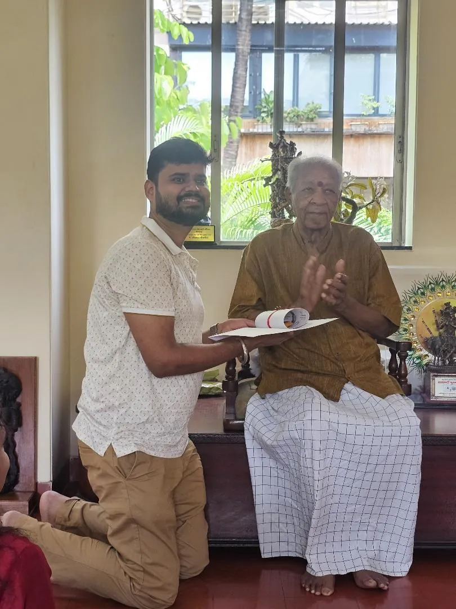
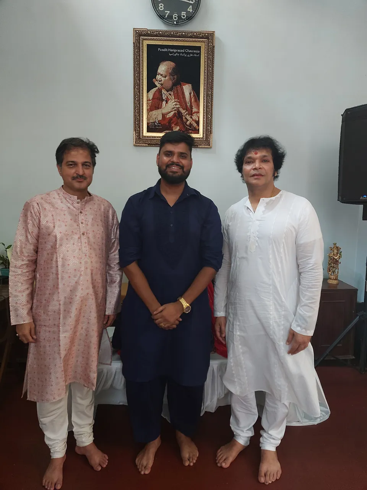
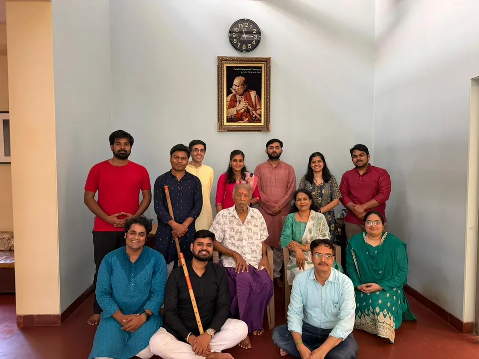
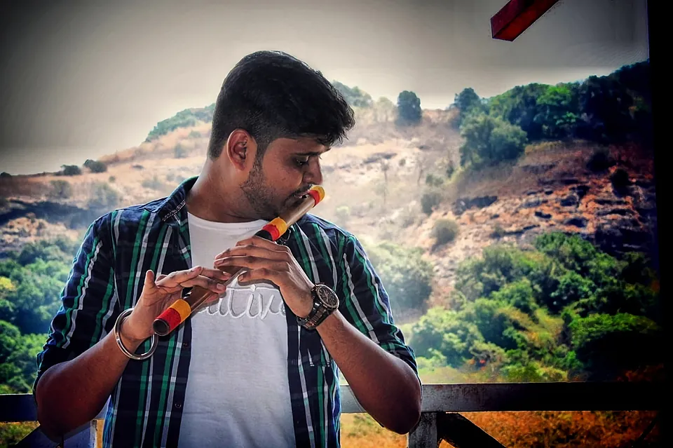
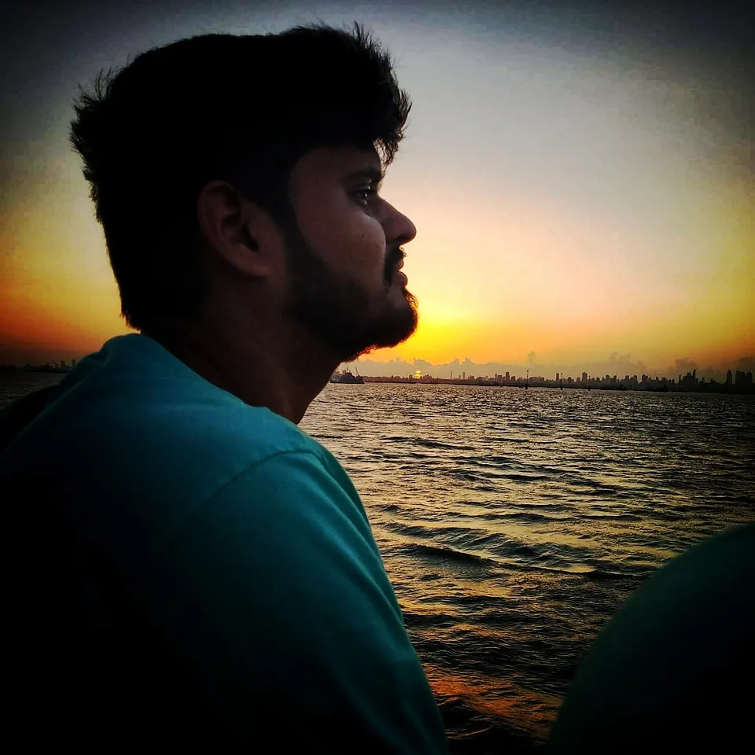
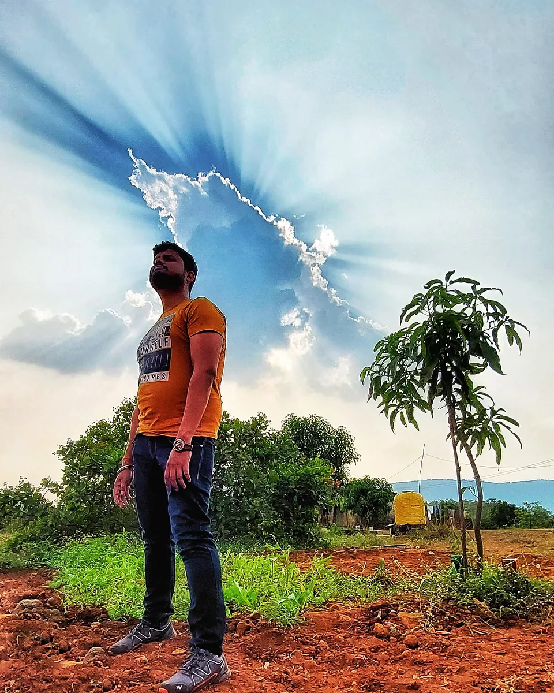
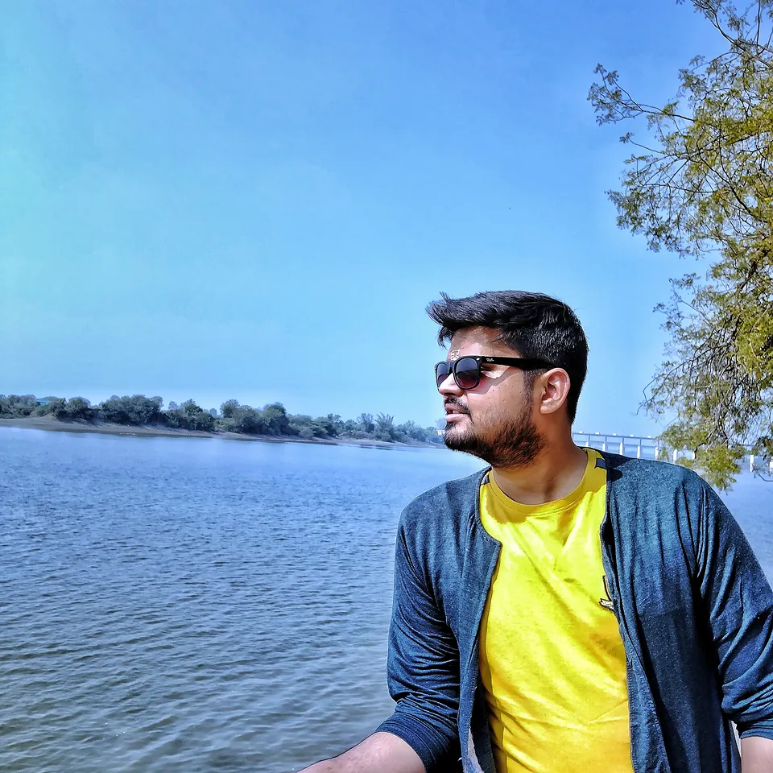
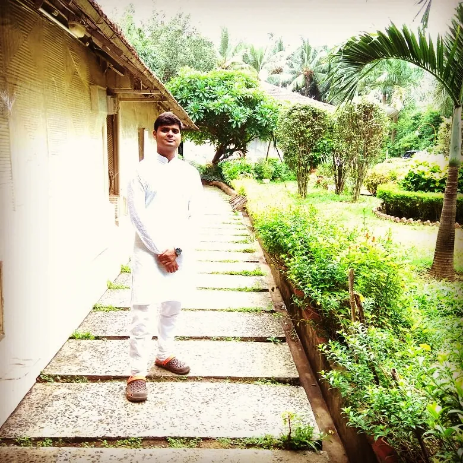

- Gen AI implementation. Spearheaded AI-driven automation of recruitment and onboarding — aligning generative AI with organisational goals to lift efficiency and the candidate experience.
- Deputy Product Owner, ServiceNow. Run platform initiatives for a leading UK health, hygiene & nutrition company: demand management, platform governance and integration across HR, ITSM, ITOM and SPM modules.
- Product roadmap. Capture and prioritise emerging platform needs into a strategic release roadmap that keeps pace with where technology is heading.
- Requirements to reality. Translate business needs into crisp user stories and acceptance criteria that make sprint planning faster and delivery cleaner.
- Stakeholder bridge. Keep business owners and engineering teams aligned so what gets built is what was actually needed.
- Governance. Track progress, surface risks early and turn delivery data into decisions leadership can act on.
Technical Program Manager · Deloitte
Shubham
DwivediPMP®
Orchestrating Gen AI programs
I turn ambitious ideas — generative AI, conversational experiences, enterprise platforms — into programs that actually ship. Off the clock, I’m a trained bansuri flautist who believes every good delivery has a rhythm.
✦ Gen AI · Conversational AI
◆ PMP® certified
♪ Bhushan, Classical Music
01 Overview
Part engineer, part strategist, fully accountable.
I’m a results-driven program leader who sits exactly where business ambition meets technical reality. Today at Deloitte, I lead Gen AI implementation for recruitment and onboarding, and help govern a ServiceNow platform for a leading UK health, hygiene & nutrition company.
I didn’t start in a boardroom — I started in a code editor. Building e-commerce storefronts and ERP front-ends taught me how software really gets made. Four years at Accenture shaping digital experiences for clients across the Middle East taught me how to make it matter to people.
Put together, that means I can sit in a sprint planning session and a steering committee on the same afternoon — and make sure both rooms are talking about the same thing.
9+years in technology, from code to programs
14professional certifications, incl. PMP® & Azure AI
3degrees — BCA, MCA & an MBA in Crisis Management
2regions served — the UK & the Middle East
02 The arc
Three movements, one composition.
-
2017 — 2019
The Builder
Full-stack and UI development for a luxury e-commerce brand and an ERP product. Learned reusability, code reviews and shipping on a sprint clock.
Magento · HTML · SQL · Java -
2019 — 2023
The Digital Advisor
Rose from analyst to Digital Excellence Advisor at Accenture — owning client relationships, campaigns, accessible web experiences and escalations.
AEM · Sprinklr · SEO · Agile -
2024 — Now
The Orchestrator
Technical Program Manager at Deloitte, leading Gen AI automation and ServiceNow product ownership from roadmap to release.
Gen AI · ServiceNow · PMP®
03 Experience
Where I’ve made things happen.
- Aug 2022 — Oct 2023Digital Excellence Advisor, Middle East
- Dec 2020 — Aug 2022Deputy Digital Excellence Advisor, Middle East
- Aug 2019 — Dec 2020Digital Marketing Advisory Analyst
- Client partner. Shaped system requirements, specifications, costs and timelines directly with clients — and found workable answers to every risk on the table.
- Agile delivery. Ran time-bound projects with tight sprint scoping, delivering on schedule with measurable impact.
- Campaigns that convert. Directed social media campaigns on Sprinklr, optimising SEO and conversion templates to grow engagement.
- Inclusive experiences. Designed front-end layouts, wireframes and accessible websites on Adobe Experience Manager.
- Team & data leadership. Assembled and led cross-functional teams, defined data-processing policies and mentored people through training and development.
- Escalations. Owned partner relationships and escalation management when stakes were highest.
- ERP front-end. Designed front-end layouts and kept a consistent experience across the ERP with reusable components and clean control flow.
- Data layer. Wrote stored procedures and efficient queries for CRUD operations.
- Team craft. Took an active part in code reviews and sprint ceremonies, working within established development standards and SLAs.
- Luxury e-commerce. Enhanced and maintained the Magento storefront for one of India’s best-known online luxury retailers — fashion, bags, shoes and clothing.
- Responsive redesign. Built responsive pages, integrated plugins and scripts, and reworked site architecture for a friendlier browsing flow.
- Quality & security. Tested the codebase, reviewed privacy and security protocols and documented every upgrade in SOPs.
- Design partner. Guided the design team on image resolution and display sizing, and explored social-platform integrations.
04 Toolkit
What I bring to the room.
Generative & Conversational AI
Taking AI from slideware to shipped workflows — automating recruitment and onboarding while keeping the human experience front and centre.
ServiceNow
Demand management, governance and roadmaps across HR, ITSM, ITOM & SPM.
Program Delivery
PMP®-grade planning, risk management, Agile sprints and decision-ready reporting.
Customer Experience
Accessible, conversion-focused journeys on AEM and Sprinklr, informed by data.
Process Mining
Apromore-certified analyst — finding the real process hiding behind the documented one.
Engineering roots
Hands-on background in full-stack development, Java (Oracle certified), Magento and SQL — so technical conversations stay grounded.
Crisis & Escalations
MBA-trained in crisis & disaster management; steady hands when partners and timelines get tense.
Stakeholder Leadership
Aligning executives, partners and engineers across time zones around one plan.
How I work
i.
Rhythm over heroics
Steady cadence — clear sprints, honest status, regular reviews — beats last-minute rescues every time.
ii.
Translate, don’t just relay
My job is to make sure the business and the builders mean the same thing when they say “done”.
iii.
Calm is a skill
An MBA in crisis & disaster management and years of escalations taught me to slow down when things speed up.
iv.
Build for the next release
From reusable components to product roadmaps, I design today’s work so tomorrow’s is easier.
05 Riyaaz
The other instrument I play.
Long before program boards and sprint reviews, there was the bansuri — the Indian bamboo flute. I earned my Bhushan in Indian classical music from Pracheen Kala Kendra and went on to complete a Diploma in Classical Music at the University of Mumbai.




“A raag is never rushed. Neither is a good rollout. Riyaaz taught me what program management keeps confirming — consistency beats intensity.”
06 Credentials
Always learning.
Project Management Professional (PMP)®
Issued Aug 2024 · Valid to Aug 2027
Credential ID 3909338
Process Mining Analyst — Advanced
2026
Process Mining Analyst — Foundations
Feb 2026
Process Mining 101
Jan 2026
Deloitte AiCon Expo: Gen AI 101 Clinic
Dec 2024
Azure AI Fundamentals
Mar 2024
Project Management Professional (PMP) Training
May 2023 · ID 4330918
Digital Marketing Capstone
Oct 2022 · ID 3853645
Mastering Social Media, Mobile Marketing & Digital Strategy
Oct 2022 · ID 3845432
Verified International Academic Qualifications
Mar 2022
Enterprise Design Thinking Co-Creator
Jul 2021
Enterprise Design Thinking Practitioner
Mar 2021
The Fundamentals of Digital Marketing
Jun 2020 · ID 2Q9 XC8 VKB
Oracle Certified Professional, Java SE 6 Programmer
Dec 2013
Education
- 2024 — 2026
Diploma of Education, Classical Music
University of Mumbai
- 2017 — 2019
MBA, Crisis / Emergency / Disaster Management
Annamalai University
- 2014 — 2017
Master of Computer Applications
Guru Nanak Dev University, Amritsar
- 2014 — 2016
Bhushan, Classical Music
Pracheen Kala Kendra
- 2011 — 2014
BCA, Computer Software Engineering
Khalsa College, Amritsar
- 2008 — 2011
Schooling — Science (PCM)
St. Francis School & DAV, Amritsar
07 Off the clock
Shorelines, skies & silence.
Meditation, a regular workout and long walks by the sea keep the mind quiet — and the breath steady for the flute.




08 Contact
Got a program that needs a conductor?
Whether it’s a Gen AI rollout, a ServiceNow roadmap or a crisis that needs a calm head — I’d love to hear about it.